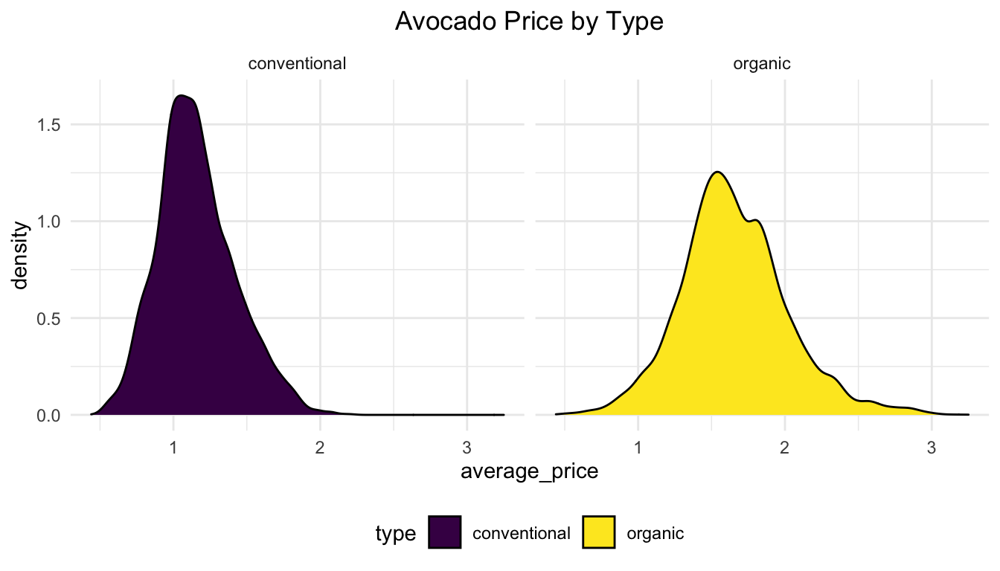
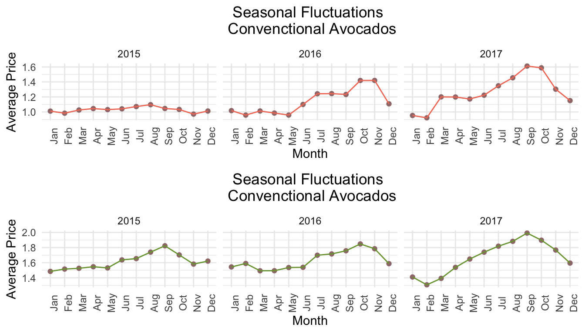

plots_maps
Renjie Wei
11/23/2020
From Renjie, trying to do more fancy plots and interactive maps.
Types of Avocados:
In this section we will analyze the different types of avocados that we have in this dataset. Basically, we have two types of avocados:
- Conventional
- Organic
Summary:
- Organic avocados: Based on the price changes throughout time we can see that they are more expensive.
- Conventional avocados: Based on price changes throughout time we can see that they are less expensive.
Trend in Price:



Relationship between Prices and Total Volume:
贝贝做过了说辣鸡的是这个么…

- Volume: Each volume peak is a signal for an upcoming drop in avocado prices.
Seasonal Patterns?:
If there any repeating trends in which the avocado price tend to increase?
Price by year

Price trend by type

And to look closer, we create the seasonality patterns in each year

Make some barplots to show the changes between year.
Regional Analysis with GDP data
trying hard to merge the two datasets